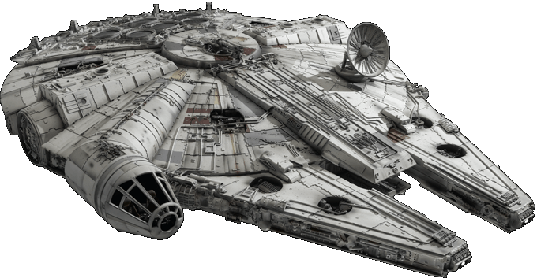
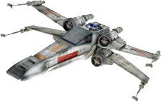
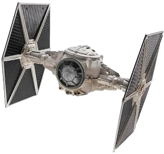

The Millennium Falcon
The Millennium Falcon was a Corellian YT-1300 light freighter used by the smugglers Han Solo and Chewbacca during the Galactic Civil War.
T-65 X-wing
The Incom T-65 X-wing starfighter was the primary all-purpose starfighter of the Rebel Alliance and its successor governments. Known for its versatility and exceptional combat performance, it was a favorite with Rebel and New Republic pilots.
TIE Fighter
The TIE Fighter was the standard Imperial starfighter seen in massive numbers throughout most of the Galactic Civil War and onward. Colloquially, Rebel and New Republic pilots referred to the craft as "Eyeballs".